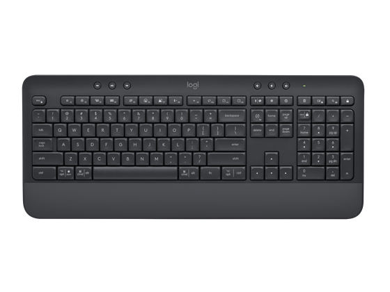

Logitech K650 Wireless y Bluetooth Grafito

Conectividad: Bluetooth Low Energy / Receptor Logi Bolt
Reposamuñecas: Integrado de tacto suave
Distribución: Inglés con teclado numérico
Batería: Hasta 36 meses de duración
Ocultar detalles
Conectividad: Bluetooth Low Energy / Receptor Logi Bolt
Reposamuñecas: Integrado de tacto suave
Distribución: Inglés con teclado numérico
Batería: Hasta 36 meses de duración
Ocultar detalles
Switches: Outemu Red (Lineales y silenciosos)
Formato: TKL (80% sin teclado numérico)
Iluminación: RGB Chroma con 18 modos
Construcción: Plástico ABS reforzado y placa metálica
Ocultar detalles
Conectividad: Bluetooth 5.1 / Cable USB-C
Compatibilidad: macOS, Windows y Linux
Switches: Keychron K Pro Brown (Táctiles)
Características: Hot-swappable con soporte QMK/VIA
Ocultar detalles
Switches: CHERRY MX Speed (Activación ultra rápida)
Tasa de sondeo: Tecnología AXON a 8000 Hz
Estructura: Marco de aluminio cepillado
Extras: Rueda de volumen dedicada y reposamuñecas magnético
Ocultar detalles